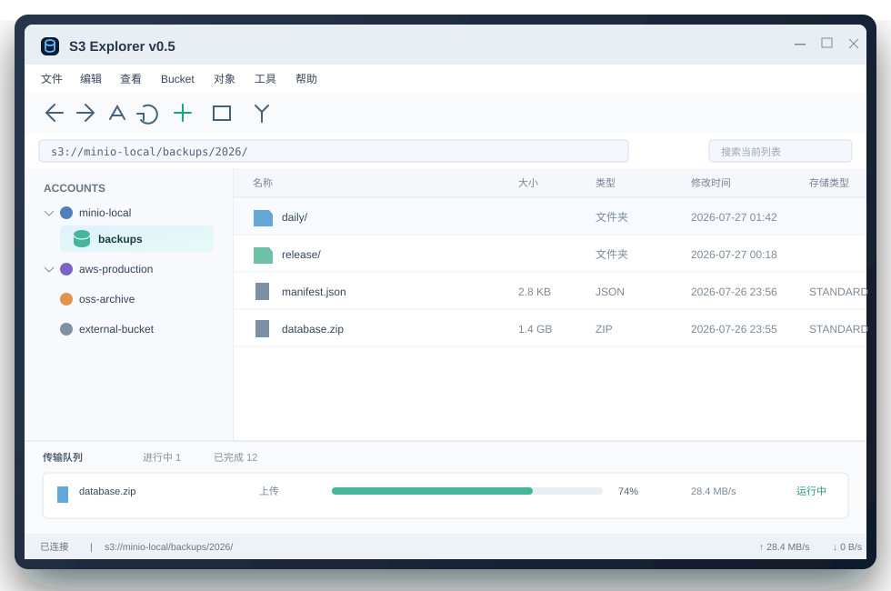

多账户浏览
Provider 模板、自动 Region、兼容类型恢复、指定外部 Bucket，以及无 ListBuckets 权限账户的清晰状态；阿里 OSS 上传与删除使用经过真实发布验证的兼容路径。
Windows 10 / 11 · x64
原生 WinForms 客户端，管理 Amazon S3、MinIO、Ceph、OSS、COS、Backblaze B2 和 Google Cloud Storage。连接迁移、浏览、传输、同步与自动化，在一个清晰的工作流里完成。
当前稳定版 v0.7.2；安装版可在校验 SHA-256 并经用户确认后完成静默升级，便携版继续手动替换。

核心能力
常用操作不是孤立按钮：危险动作有确认，长任务能恢复，兼容差异有明确提示。
Provider 模板、自动 Region、兼容类型恢复、指定外部 Bucket，以及无 ListBuckets 权限账户的清晰状态；阿里 OSS 上传与删除使用经过真实发布验证的兼容路径。
上传、下载、复制和移动进入持久队列，支持暂停、重试、共享限速、并发与 Multipart 断点；可选托盘驻留让窗口隐藏后仍可继续任务。
先分析差异，再逐项勾选执行单向镜像；支持筛选排序、快速排除、过期保护、执行报告与失败重试。
按 Bucket 和最长前缀映射交付域名；配置与关联支持多选、复制和批量检测，属性页可经默认 CDN 关联直接下载，预热和刷新可在上传后自动执行。
CORS、版本控制、默认加密、Bucket Tags 与生命周期规则；保存前本地验证并回读，按 Provider 子能力明确开放。
分页查看 Version ID、当前版本和 Delete Marker；可下载或恢复指定版本，并通过双重确认永久清理明确版本。
同一套能力，两种入口
发布包内置 s3explorer-cli.exe。双击会显示完整帮助；Unity/CI 可使用严格参数、文件级并发、共享限速、Multipart 设置、Manifest 增量发布和逐文件 SHA-256 校验。Unity 2021.3 可直接下载独立的 S3Explorer.Contracts SDK。
PS> s3explorer-cli profile list --json
[{ "name": "minio-local", "provider": "MinIO" }]
PS> s3explorer-cli object list `
s3://minio-local/backups/ --recursive --json
PS> s3explorer-cli publish --profile minio-local `
--source D:\Build\Windows --bucket game-builds `
--prefix windows/1.2.3 --output json --non-interactive公开路线图
同步、CLI、Provider 简化、连接迁移、CDN 工作流、主页与更新交付链。
CORS、版本、加密、对象恢复和同步结果控制。
生命周期、Object Lock、Tagging、静态网站和跨账户传输。
虚拟列表、搜索、计划任务、发布签名、SBOM 和更新通道。
v0.7.2 · 开始使用